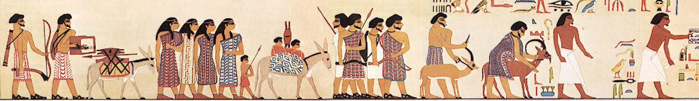

Beni Hasan Tomb Paintings

The Beni Hasan tomb paintings include the famous procession of the Aamu on the north wall of tomb BH3, belonging to the 12th-Dynasty official Khnumhotep II at Beni Hasan, Egypt. Dated to year 6 of Senusret II, about 1892 BC, the scene shows West Asiatic visitors - 15 depicted, 37 named in the inscription - led by Absha (Abisha), called 'ruler of a foreign land' and described with the earliest known use of the title 'Hyksos,' bringing eye-paint and animals as offerings. The paintings were recorded by Lepsius in 1849 and published by Percy Newberry in 1893.
Interpretations
The painting is the classic visual evidence that West Asiatic (possibly Canaanite or Amorite) traders entered Egypt in the patriarchal era, dressed in colorful patterned garments and traveling with families, donkeys, and livestock - the same kind of movement Genesis describes for Abram and later Jacob's family. Caution is required: Abisha is not a biblical figure, the Aamu are not Israelites, and the scene is sometimes called Hyksos or 'forerunners' of the Hyksos only in a loose sense. It proves the plausibility and cultural setting of Genesis's Egypt journeys, not any specific biblical event.
Scripture Illuminated
Biblical Significance
Beni Hasan gives a face to the world of Genesis 12: Abram's journey into Egypt happened in an age when Asiatic caravans really did arrive at Egyptian officials' doors.
https://en.wikipedia.org/wiki/Khnumhotep_II